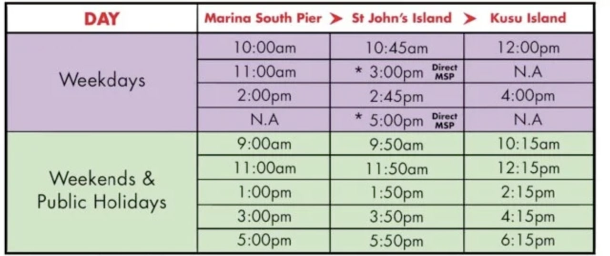
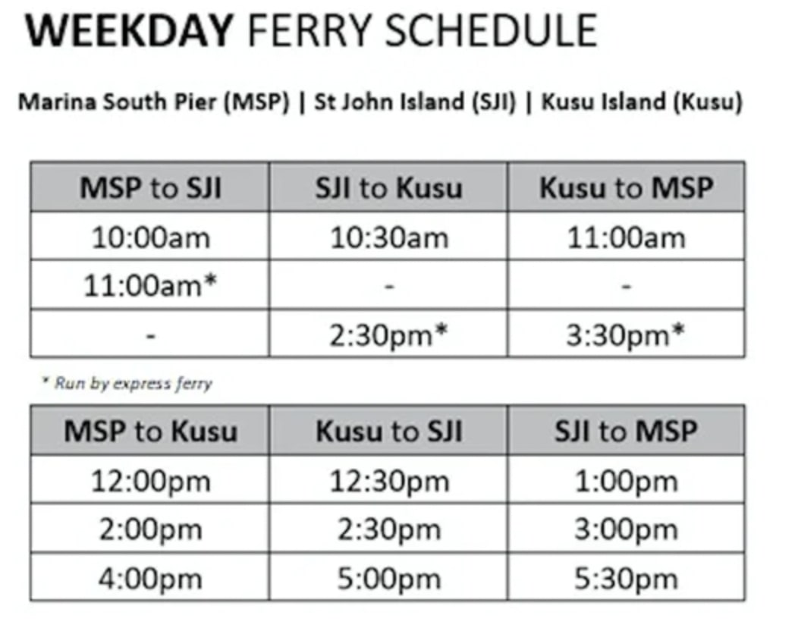
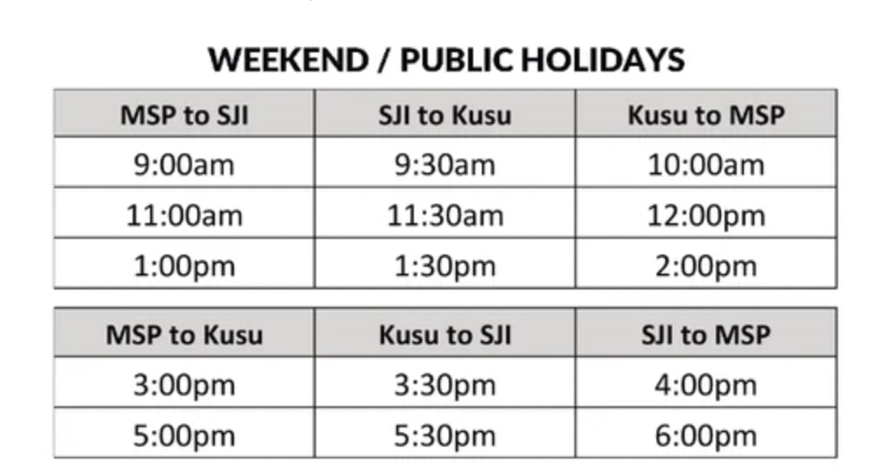

Visit Kusu Island
The only way to get to the island is via ferry from the Marina South Pier. Be sure to take note of time while you are there as camping is strictly not allowed so make sure you board the last ferry back to main land. The ferry duration is about an hour long. There are 2 ferry companies to Kusu Island - Singapore Island Cruise Ferry and Marina South Ferries.
Ferry Schedules
Singapore Island Cruise Ferry
Marina South Ferries
 Booking sites and Ticket price
Booking sites
Can't wait for your trip? Refer to the following sites to book your ticket(s).
Singapore Tickets | Klook | Bus online Ticket
Ticket price
Depending on the site, ticket prices may range as can be seen from the table below.
| Adult | Child | |
|---|---|---|
| Price* | $13.59 - $15 | $11 - $13.59 |